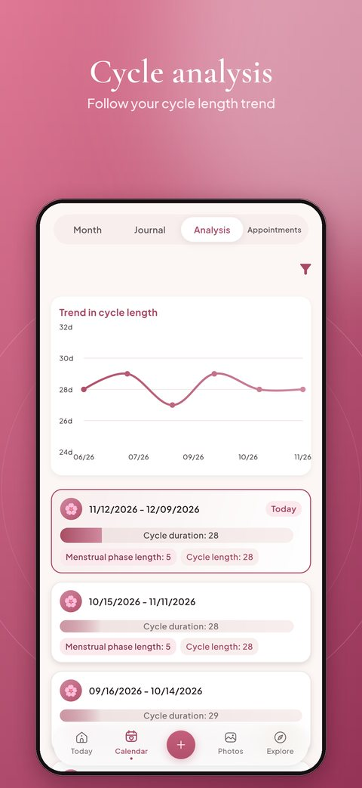
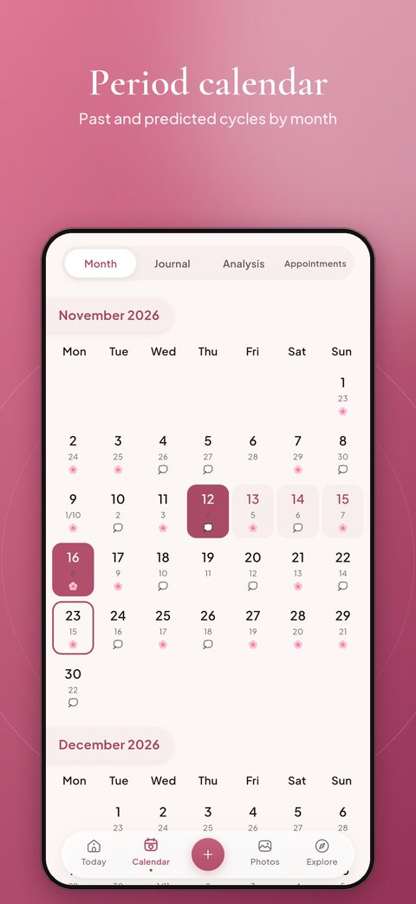

What you can do
Period tracker & cycle calendar
Your whole menstrual cycle on one ring, with today marked. A period calendar shows past and predicted cycles by month.
Ovulation calculator & fertile window
Fertile window, ovulation day and next period, each with a date and a countdown.
Period reminders
Gentle reminders before your period, around ovulation, and to log your day.
Smart predictions
Use your recent average or set your own cycle and period length. Follow your cycle length trend in a chart.
Symptom, mood & health diary
Log symptoms, moods and notes, and keep doctor appointments beside your cycle.
Private & secure
Your diary stays on your phone. Lock the app with Face ID or Touch ID.
Also inside: a private photo album and photo studio, doctors and places, parenting articles, and moving to a new phone over Wi-Fi or with a backup file.
Bạn có thể
Theo dõi kinh nguyệt & lịch chu kỳ
Cả chu kỳ trên một vòng tròn, có đánh dấu hôm nay. Lịch kinh nguyệt cho thấy chu kỳ đã qua và dự đoán theo tháng.
Tính ngày rụng trứng & ngày thụ thai
Cửa sổ thụ thai, ngày rụng trứng và kỳ kinh tiếp theo, kèm ngày cụ thể và đếm ngược.
Nhắc kỳ kinh
Nhắc nhẹ nhàng trước kỳ kinh, quanh ngày rụng trứng và nhắc ghi nhật ký.
Dự đoán thông minh
Dùng giá trị trung bình các chu kỳ gần đây hoặc tự đặt độ dài chu kỳ và số ngày hành kinh. Theo dõi xu hướng bằng biểu đồ.
Nhật ký triệu chứng, tâm trạng
Ghi triệu chứng, tâm trạng, ghi chú và lưu lịch hẹn khám cạnh chu kỳ.
Riêng tư & bảo mật
Nhật ký lưu trên điện thoại. Khoá ứng dụng bằng Face ID hoặc Touch ID.
Ngoài ra: album ảnh riêng tư và studio chỉnh ảnh, bác sĩ và địa điểm, bài viết nuôi dạy con, chuyển sang điện thoại mới qua Wi-Fi hoặc tệp sao lưu.
이런 것을 할 수 있어요
생리 기록 & 주기 달력
원형 차트로 전체 주기와 오늘 위치를 확인하고, 월별 달력에서 지난·예측 주기를 봅니다.
배란일 계산기 & 가임기
가임기, 배란일, 다음 생리일을 날짜와 남은 일수로 표시합니다.
생리 예정일 알림
생리 전, 배란일 무렵, 기록 시간에 맞춰 부드럽게 알려드려요.
똑똑한 주기 예측
최근 주기의 평균값을 쓰거나 주기와 생리 기간을 직접 설정하고, 차트로 변화를 확인하세요.
증상·기분·건강 일기
증상, 기분, 메모를 기록하고 진료 일정도 주기 옆에서 관리하세요.
프라이빗 & 안전
일기는 휴대폰에 저장됩니다. Face ID나 Touch ID로 앱을 잠글 수 있어요.
그 밖에: 비공개 앨범과 포토 스튜디오, 병원·장소 찾기, 육아 글, Wi-Fi 또는 백업 파일로 새 휴대폰 이동.
できること
生理記録 & 周期カレンダー
ひとつの円で周期全体と今日の位置を表示。月ごとのカレンダーで過去と予測の周期を確認。
排卵日計算 & 妊娠しやすい期間
妊娠しやすい期間、排卵日、次の生理日を日付と残り日数で表示します。
生理日の通知
次の生理の前、排卵日のころ、記録の時間にやさしくお知らせします。
かしこい周期予測
最近の周期の平均値を使うか、周期や生理の長さを自分で設定。グラフで推移も確認できます。
症状・気分・体調の日記
症状、気分、メモを記録し、通院の予定も周期のとなりで管理できます。
プライバシーと安全
日記の内容はスマートフォンに保存。Face ID や Touch ID でロックできます。
そのほか：プライベートアルバムとフォトスタジオ、医師・場所の検索、子育て記事、Wi-Fi またはバックアップファイルでの機種変更。

